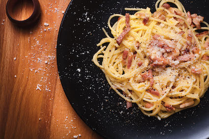

Back to Main Page
Carbonara

Description
In this case I am sharing my own recipe, you will probably find dozens more recipes out there that might lead to a way better result.
However, let me share that this is my favorite recipe, one of the only things that I can actually cook properly.
Ingredients
- Spaghetti
- Truffle Oil
- Salt
- Bacon (something like this
- Egg
- Grated or powdered cheese
Steps
- Cook the pasta: Boil water seasoned with salt and a bit of truffle oil. Once boiling, add the spaghetti. You can leave the gas turned on as it cooks through to the point you like the most, however you can also try this energy saving idea supported by Nobel Prize winner Giorgio Parisi. I tried it myself and it worked, but I'm not an expert!
- Cool down the pasta: Once the pasta is ready, take it off the water and pass it through some cold water. It prevents it from start gluing and become a huge sticky blob.
- Prepare the bacon: Put your bacon in a frying pan with a bit of margarine and cook it a bit.
- Add the pasta: Once the bacon is ready, reduce a bit the heat and add the pasta to the frying pan. Warm it slightly.
- Add the egg: Switch off the oven and add the egg, mix it all, so that it becomes a bit gooey.
- Sprinkle it with some powdered or grated cheese.
- Enjoy it: No instructions here, just put it on a plate or a bowl and enjoy your meal.
Sorry in advance to everyone that might get offended with my technique!
Picture by Javier Somoza, CC BY-SA 4.0, Link